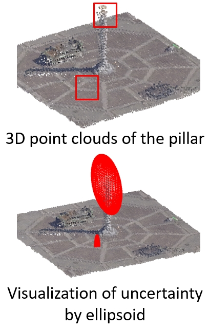
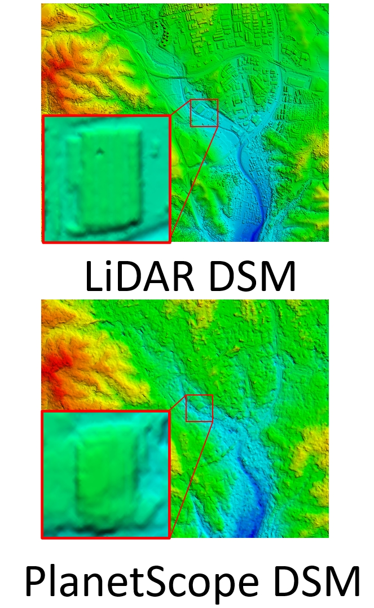

|
Debao Huang I'm a PhD student in the Geospatial Data Analytics Group at The Ohio State University. I started in January 2021 and am supervised by Prof. Rongjun Qin. My research interests lie in 3D reconstruction and uncertainty modeling. I am working on multiple projects funded by ONR and IARPA to solve 3D geometry problems and tasks. |
News |
|
06/2023 |
Our new paper of the preliminary study of uncertainty quantification in MVS, got accepted to ISPRS Geospatial Week 2023. |
|
05/2022 |
Our new paper of baseline constraint in BA for SfM using uncalibrated multi-camera systems, got accepted to ISPRS Congress 2022. |
|
04/2022 |
Our new paper of evaluation of PlanetScope images for 3D reconstruction and change detection, got published in GIScience & Remote Sensing Journal. |
My Research |
|  |
A CRITICAL ANALYSIS OF INTERNAL RELIABILITY FOR
UNCERTAINTY QUANTIFICATION OF DENSE IMAGE MATCHING IN MULTI-VIEW
STEREO
Debao Huang, Rongjun Qin ISPRS Annals of the Photogrammetry, Remote Sensing and Spatial Information Sciences, 2023 paper This paper presents preliminary study of metrics in the dense matching and MVS fusion process, to learn heuristic correlation for propagating errors to the final point clouds. |

|
ENABLING NEURAL RADIANCE FIELDS (NERF) FOR
LARGE-SCALE AERIAL IMAGES -- A MULTI-TILING APPROACH AND THE
GEOMETRY ASSESSMENT OF NERF
Ningli Xu, Rongjun Qin, Debao Huang, Fabio Remondino arxiv, 2023 arxiv This paper provides multi-camera tiling (MCT) strategy to scale the NeRF on large-scael aerial datasets and a thorough geometry assessment of NeRF. |

|
CONSTRAINED BUNDLE ADJUSTMENT FOR STRUCTURE
FROM MOTION USING UNCALIBRATED MULTI-CAMERA SYSTEMS
Debao Huang, Mostafa Elhashash, Rongjun Qin ISPRS Annals of the Photogrammetry, Remote Sensing and Spatial Information Sciences, 2022 paper This paper proposes a bundle adjustment (BA) solution for uncalibrated cameras with overlapping views by incorporating a so-called baseline constraint which builds the link between two cameras that are static to each other. |
|  |
AN EVALUATION OF PLANETSCOPE IMAGES FOR 3D
RECONSTRUCTION AND CHANGE DETECTION – EXPERIMENTAL VALIDATIONS WITH
CASE STUDIES
Debao Huang, Yang Tang, Rongjun Qin GIScience & Remote Sensing, 2022 paper This paper comprehensively evaluates the 3D potential of PlanetScope images by performing accuracy analysis for both 3D reconstruction and change detection. |

|
A VOLUMETRIC CHANGE DETECTION FRAMEWORK USING
UAV OBLIQUE PHOTOGRAMMETRY – A CASE STUDY OF ULTRA-HIGH-RESOLUTION
MONITORING OF PROGRESSIVE BUILDING COLLAPSE
Ningli Xu, Debao Huang, Shuang Song, Xiao Ling, Chris Strasbaugh, Alper Yilmaz, Halil Sezen, Rongjun Qin International Journal of Digital Earth, 2021 paper This paper presents an unmanned aerial vehicle (UAV) based fine-scale 3D change detection and monitoring of progressive collapse performance of a building during a demolition event. |